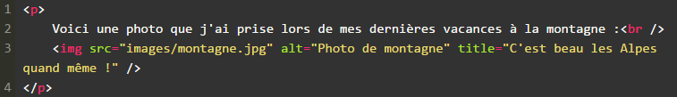
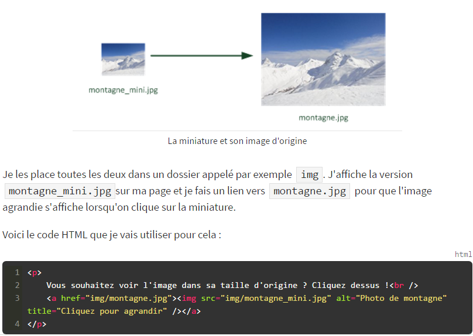
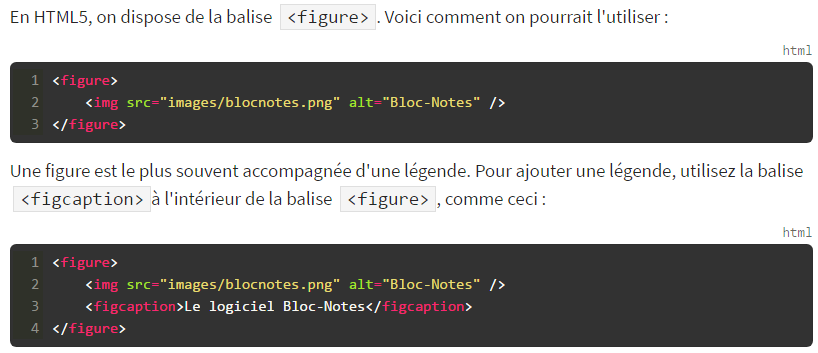
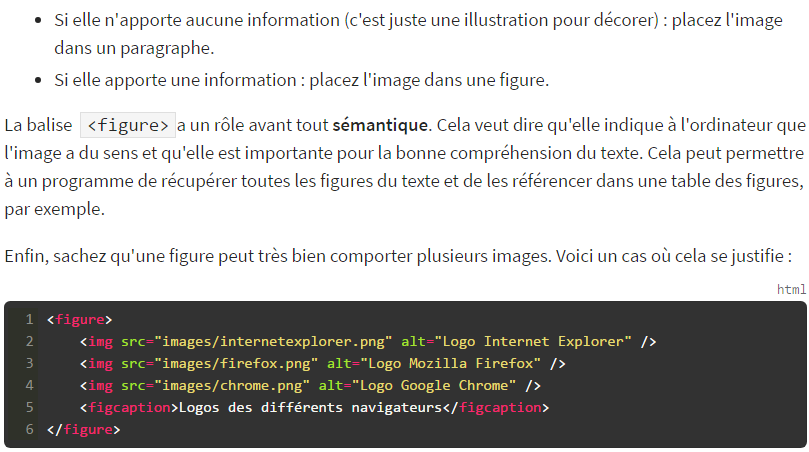

Section 1 - Les différents formats d'images
Sous-section 1 : Le JPEG
Les images au format JPEG (Joint Photographic Expert Group) sont très répandues sur le Web. Ce format est
conçu pour réduire le poids des photos (c'est-à-dire la taille du fichier associé), qui peuvent comporter plus de 16
millions de couleurs différentes. Les images JPEG sont enregistrées avec l'extension.jpg ou.jpeg.
Sous-section 2 : Le PNG
Le format PNG (Portable Network Graphics) est le plus récent de tous. Ce format est adapté à la plupart des graphiques
(je serais tenté de dire « à tout ce qui n'est pas une photo »). Le PNG a deux gros avantages : il peut être rendu transparent
et il n'altère pas la qualité de l'image. Le PNG existe en deux versions, en fonction du nombre de couleurs que doit
comporter l'image :
-
PNG 8 bits : 256 couleurs
-
PNG 24 bits : 16 millions de couleurs (autant qu'une image JPEG).
Sous-section 3 : Le GIF
Le format GIF est limité à 256 couleurs. Néanmoins, le GIF conserve un certain avantage que le PNG n'a pas : il peut être animé.
Sous-section 4 : Il existe un format adapté à chaque image
-
Une photo : utilisez un JPEG.
-
N'importe quel graphique avec peu de couleurs (moins de 256) : utilisez un PNG 8 bits ou éventuellement un GIF.
-
N'importe quel graphique avec beaucoup de couleurs : utilisez un PNG 24 bits.
-
Une image animée : utilisez un GIF animé.
Sous-section 5 : Les erreurs à éviter
-
Bannissez les autres formats tels que bitmap.
-
Choisissez bien le nom de votre image exemple: mon_image.png .
Section 2 - Insérer une image
Sous-section 1 : Insertion d'une image
Quelle est la fameuse balise qui va nous permettre d'insérer une image ? Il s'agit de… ‹ img/› ! La balise doit être accompagnée de deux attributs obligatoires :
-
src : il permet d'indiquer où se trouve l'image que l'on veut insérer. Vous pouvez soit mettre un chemin absolu (ex. : http://www.site.com/fleur.png),
soit mettre le chemin en relatif (ce qu'on fait le plus souvent). Ainsi, si votre image est dans un sous-dossier images,
vous devrez taper : src="images/fleur.png"
-
alt : cela signifie « texte alternatif ». On doit toujours indiquer un texte alternatif à l'image, c'est-à-dire un court texte qui décrit ce que
contient l'image. Ce texte sera affiché à la place de l'image si celle-ci ne peut pas être téléchargée (cela arrive), ou dans les navigateurs de personnes
handicapées (non-voyants) qui ne peuvent malheureusement pas « voir » l'image.
Les images doivent se trouver obligatoirement à l'intérieur d'un paragraphe ou d'un div
Sous-section 2 : Ajouter une infobulle

L'attribut permettant d'afficher une bulle d'aide est le même que pour les liens : il s'agit de title. Cet attribut est facultatif (contrairement à alt).
Sous-section 3 : Miniature cliquable
Si votre image est très grosse, il est conseillé d'en afficher la miniature sur votre site. Ajoutez ensuite un lien sur cette miniature pour que vos visiteurs puissent afficher
l'image en taille originale.
De nombreux sites permettent de redimensionner des images, comme ResizeImage.net par exemple. Je vais ainsi disposer de deux versions de ma photo,
comme à la figure suivante) : la miniature et l'image d'origine.

Liv Tyler : Portrait
Section 3 - Les figures
Sous-section 1 : Création d'une figure
Au cours de la lecture de ce livre, vous avez déjà rencontré plusieurs fois des figures. Ce sont des éléments qui viennent enrichir le texte pour compléter
les informations de la page.
Les figures peuvent être de différents types :
-
images
-
code source
-
citations, etc...

Sous-section 2 : Bien comprendre le rôle des figures
Je ne vois pas vraiment de changement. Quand dois-je placer mon image dans un paragraphe et quand dois-je la
placer dans une figure ?


{kind=link}